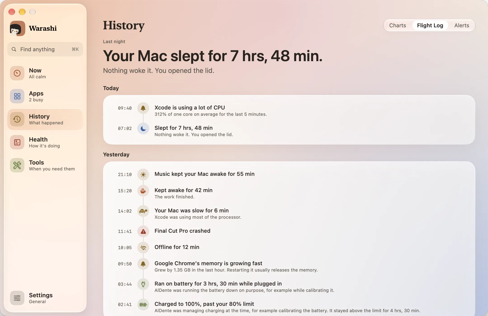
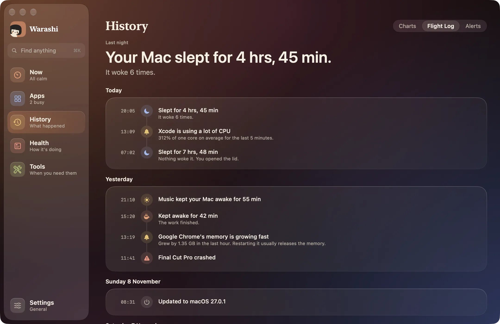
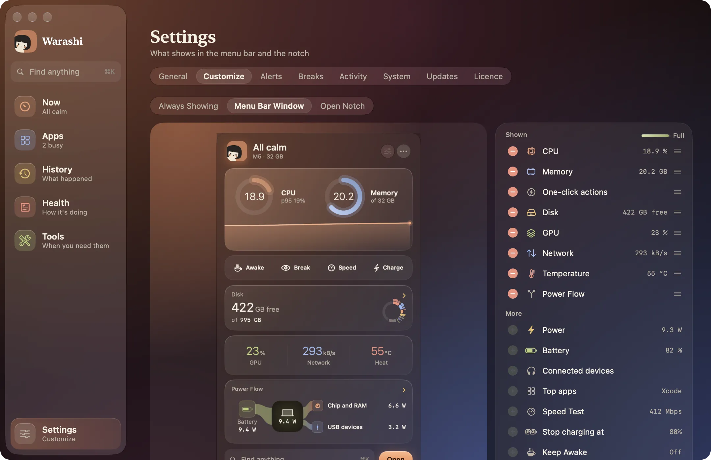

Beta pública gratuita · para Macs con Apple silicon en macOS 26 · novedad: ¿Por qué va lento mi Mac?, revisiones de seguridad y ritmos de pausas
La caja negra de tu Mac.
Warashi vigila en silencio desde tu barra de menús y recuerda. Qué ralentizó tu Mac, qué app gastó la batería y qué necesita de verdad tu próximo Mac.
 23%14:32
23%14:32


Descúbrelo en dos minutos.
El Keynote muestra cada parte de Warashi. Un día con tu Mac muestra cómo cuida del tuyo sin hacer ruido.
Un espíritu. Un número. Nada que estorbe.
Warashi ocupa un único elemento pequeño en tu barra de menús. Todo lo demás está a un clic, y solo avisa cuando algo requiere tu atención.
- La barra de menúsEl espíritu y el número que te importa: CPU, memoria, potencia, temperatura y más.
- A un clicLa ventana de la barra de menús: anillos del último minuto, tus lecturas y acciones de un clic para mantener tu Mac activo, hacer una pausa, probar tu internet o cargar completamente.
- La muesca, trabajandoDos números flanquean la muesca. Pasa el puntero y se abre como un panel en directo. En otras pantallas, una pequeña isla hace lo mismo.
- A tu gustoElige lo que muestran la barra de menús, la muesca y la ventana de la barra de menús, todo en un solo lugar, y arrastra cada cosa adonde quieras.
23%14:3224.8GCuando falta memoria, el número se convierte en el aviso.
Seis apartados. Tres clics hasta cualquier cosa.
Una ventana tranquila, en claro u oscuro, agrupada según lo que quieres hacer: Ahora, Apps, Historial, Salud y Herramientas. Pulsa ⌘K para buscar cualquier página o acción.







Las pantallas de la app de esta página usan datos de ejemplo.
Mira a dónde va cada vatio.
Desde el cargador y la batería, pasando por tu Mac, hasta el chip, tus dispositivos USB y todo lo demás. Mientras carga, la parte que va a la batería sigue su propio camino, así que el número del Mac es solo lo que usa el Mac.


Cargador y batería
Lo que entrega el cargador respecto a su potencia nominal, y si la batería se está cargando, se mantiene o ayuda.
Tus dispositivos
La energía que sale por USB, además de las baterías de los AirPods y del ratón y las unidades externas que puedes expulsar.
Recuerda
La potencia del cargador y la de USB se suman a tu historial, para que veas qué consumía energía a las 15:00.
Haz clic en cualquier momento. Entiende qué pasó.
Apunta a un pico de una gráfica y Warashi te dice qué estaba pasando, en lenguaje llano, con las apps que estaban en marcha y lo que suelen hacer. Si no pasó nada fuera de lo normal, lo dice.
- Pruebas, no suposicionesSwap, presión de memoria, calor, CPU y disco, a partir de lo que realmente se registró.
- Directo a la appAbre la app responsable, y sal de ella o muéstrala en el Finder.


¿Qué hay en ese puerto? ¿Cuánto cuesta ese agente?
Servidores dev agrupados por proyecto, con un aviso cuando uno está abierto a tu red. Cada agente de programación con IA, con la CPU y la memoria que han usado él y sus herramientas.
$ warashi explain 14:30
Memory ran short
Swap rose from 1.2 GB to 8.6 GB.
$ warashi apps --hours 3
Xcode CPU 37m 35s memory 9.4 GB
Safari CPU 26m 22s memory 6.1 GBEl comando warashi y una conexión opcional de solo lectura permiten que Claude, Cursor y otras apps de IA respondan preguntas a partir del historial de tu Mac. No se comparte nada a menos que lo añadas.
¿Está mi Mac en buena forma?
Chequeo responde en una línea, a partir de una semana de mediciones: batería, almacenamiento, memoria, calor y cuánta vida han gastado tu SSD y tus discos externos. Además, todo lo que se inicia con tu Mac y lo que cuesta.
- Detén la carga en el 80 %Mantén más sana durante más tiempo una batería que pasa casi siempre enchufada. Carga al completo solo una vez antes de un viaje, o prográmalo para la mañana.
- Avisos antes de que duela“Tu disco de arranque podría estar casi lleno en unos 40 días”, una batería muy caliente, una conexión que se cayó o una VPN que dejó de funcionar sin avisar.
Pequeñas ayudas, ahí cuando las pides.
Pausas suaves para tus ojos que esperan mientras estás en una llamada. Mantener activo para una descarga, una compilación o una presentación, incluso con la tapa cerrada. Y los pequeños detalles: velocidad de internet y del disco, calidad del Wi-Fi, una pantalla en negro o un teclado desactivado para limpiar, Expulsar todos, vaciar la papelera y un informe del Mac para pegar en un chat de soporte.
- Pausas que te respetan20-20-20, Pomodoro o tu propio ritmo: un suave desenfoque y una cuenta atrás, que esperan mientras tu cámara o tu micrófono están en uso o se reproduce un vídeo.
- Mantener activo, a tu maneraDurante una hora, hasta que termine el trabajo o mientras una app esté abierta. Un clic en la barra de menús o un atajo de teclado.
Todo, en una pequeña app.
Siempre ahí
- Barra de menús: el espíritu y un número que eliges
- Ventana de la barra de menús: todas las lecturas y acciones de un clic
- Muesca e isla: un vistazo que se abre como un minipanel
- Personaliza los tres, en un solo lugar
Lecturas en directo
- CPU por tipo de núcleo, GPU y presión de memoria con swap
- Potencia y Flujo de energía
- Temperatura y ventiladores
- Red, disco y batería
- Dispositivos conectados: AirPods, ratones y discos
Qué pasó
- Historial de hasta 12 meses, cada pocos segundos durante un día
- ¿Qué pasó aquí? para cualquier momento
- Diario de a bordo: reposo, fallos, actualizaciones, sin conexión
- Tiempo × Coste y un resumen semanal
Salud
- Chequeo: un veredicto a partir de una semana de datos
- Límite de carga, carga completa y programación
- Salud del SSD y de los discos externos
- Almacenamiento: qué llena tu disco
- Asesor de renovación para tu próximo Mac
Herramientas
- Pausas para tus ojos y tu postura
- Mantener activo, incluso con la tapa cerrada
- Velocidad de internet y del disco, calidad del Wi-Fi
- Limpiar pantalla y Limpiar teclado
- Expulsar todos, Vaciar papelera y un informe del Mac
- Buscar lo que sea con ⌘K
Para desarrolladores
- Puertos por proyecto, con Abrir y Copiar
- Agentes de IA y lo que cuestan
- Inspector de procesos: línea de comandos, padre, firma
- Comando warashi y MCP para apps de IA
Qué hacer
- Alertas: apps desbocadas, memoria, disco, calor, batería, conexión e IP pública
- Sal de una app, o muéstrala en el Finder, y mira cuánto ahorraría
Tuyo
- Claro y oscuro, o el de tu Mac
- Siete idiomas
- Exporta todo como CSV
- Sin cuenta. Tu historial se queda en tu Mac
Las preguntas que de verdad te haces.
¿Necesito un Mac nuevo? ¿Cuál?
El Asesor de renovación vigila la presión de memoria, el swap, el crecimiento del almacenamiento y con qué frecuencia el chip va a tope. A los 30 días te dice cuánta memoria y cuánto almacenamiento necesita tu próximo Mac, y si te ayudaría un chip más rápido, con las pruebas. Cómo decide
¿Cuánto me cuesta de verdad cada app?
El tiempo en primer plano, unido a la energía: cuánto cuesta una app por cada hora que la usas y qué gastó la batería de apps que ni siquiera abriste. Tiempo × Coste
¿Por qué iba lento hace diez minutos?
Un año de historial, con datos cada pocos segundos durante el último día. Haz clic en el momento en que ocurrió y Warashi te lo explica, con la app responsable. Lee la guía
Avísame cuando importe. Solo entonces.
Una app desbocada, memoria que crece rápido, un disco que se llena, calor, salud de la batería. Una vez por problema, con las pruebas. Alertas
Un monitor que no te cuesta nada.
Swift nativo, hecho para Apple silicon. Warashi mide su propio coste igual que el de cualquier otra app y te lo muestra.
de un núcleo, en segundo plano
de memoria, normalmente
Descarga, abre y listo.
La historia de tu Mac se queda en tu Mac.
El historial, los nombres de las apps y la actividad están en una pequeña base de datos en tu Mac. Solo salen de él si decides conectar una app de IA. Sin cuenta. Sin grabación de pantalla, sin pulsaciones de teclas, sin contenido de archivos.
Warashi envía estadísticas de uso anónimas (versión, macOS, familia del chip y qué funciones se usan) para ayudar a mejorarlo. Nunca nombres de apps, archivos ni historial. Qué se envía exactamente

Buenas preguntas.
¿Cuándo puedo tener Warashi?
Ya. La beta se descarga gratis y se actualiza sola. Cuando llegue Warashi 1.0, la beta se detiene y te pide que actualices y compres una licencia.
¿En qué Mac funciona?
Mac con Apple silicon (M1 y posteriores) con macOS 26 o posterior.
¿Es gratis?
Gratis durante la beta. Warashi 1.0 será una compra única, sin suscripción.
¿En qué se diferencia de Monitor de Actividad?
Monitor de Actividad muestra este segundo. Warashi recuerda: qué pasó mientras no mirabas, qué app estuvo detrás, cuánto costó y qué significa eso para tu próximo Mac.
Hecho por una sola persona, con cariño.

Hola, soy Adam, desarrollador independiente. Warashi es mi propio proyecto: la app, su diseño y este sitio web.
Quiero que sea el tipo de app para Mac que me encantaría usar a mí: tranquila, honesta con sus números y ligera para tu Mac. Si tienes una idea, o algo no va bien, escríbeme. Me gustará saberlo.
Adam
Deja que un espíritu tranquilo
cuide de tu Mac.
Pruébalo gratis mientras Warashi está en beta.